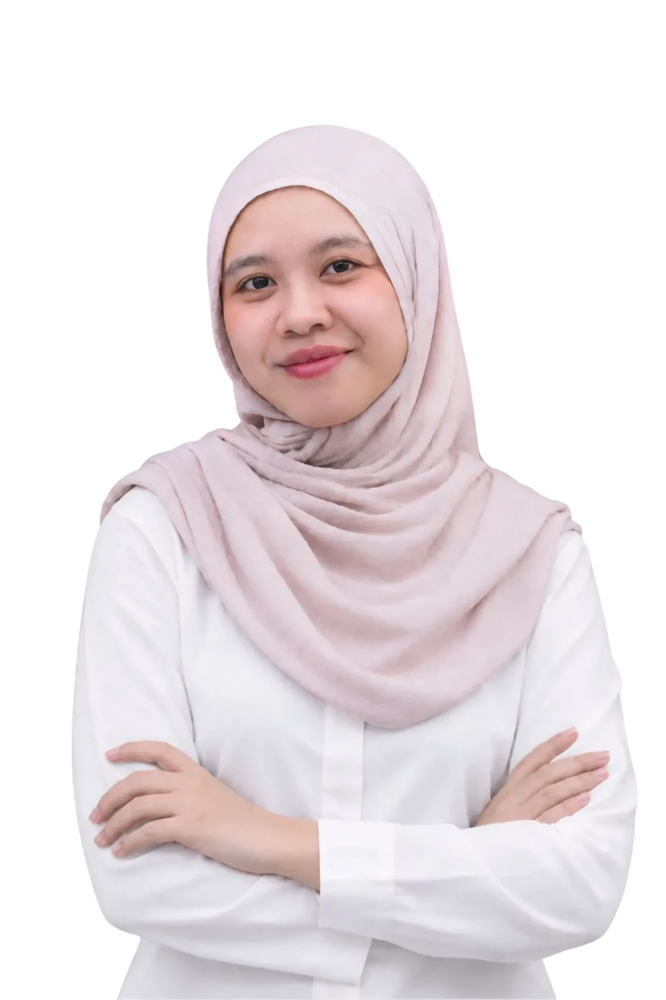

ERIKA
PORTFOLIO
13 Projects4 Work Experiences
Data Analyst • Business Intelligence • Data Scientist
Surabaya, East Java
erikaftmtl13@gmail.com
linkedin.com/in/erika-fatimatul
erikaftmtl13@gmail.com
linkedin.com/in/erika-fatimatul
Data Analyst with 2+ years of hands-on experience in data analysis, business intelligence, and prediction. I work with Python, SQL, Power BI, Tableau and Looker Studio — building machine learning models and dashboards that support strategic decisions.
